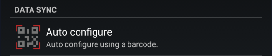

BlueJay Watch


You can buy your BlueJay Watch here:
Two generations of BlueJay are available.
You need to setup X2 with xDrip+, then you can make it standalone.
GTS can be setup without xDrip+ (only standalone) and also with xDrip+.
Sharing BG
BlueJay is only Bluetooth and cannot share BG data without being connected to your phone xDrip+.
BlueJay watches are powerful companions for your G5, G6 and ONE sensors. They both connect directly to the transmitter but you need to be aware of the limitations.
G5⌁
These transmitters only have one Bluetooth slot.
If you want to connect BlueJay you need to disconnect the transmitter from any other app or receiver.
G6 and ONE⌁
G6 and ONE transmitters have two Bluetooth slots: phone and non-phone.
You can configure your slots as per the table below. Only two devices can be connected simultaneously to the transmitter, each one using a unique slot.
By default BlueJay uses the non-phone slot. See here how to change this setting.
| Vendor app | Receiver | Connected pump | BlueJay Watch |
|---|---|---|---|
| Cannot be used | Cannot be used | Cannot be used | Non-phone slot xDrip+ uses phone slot |
| Uses phone slot | Cannot be used | Cannot be used | Non-phone slot |
| Cannot be used | Uses non-phone slot | Cannot be used | Phone slot |
| Cannot be used | Cannot be used | t:slim, Omnipod 5 use non-phone slots | Phone slot |
| Cannot be used | Cannot be used | CamAPS, DBLG1 use phone slot | Non-phone slot |
Note: xDrip+ uses the phone slot by default, non-phone slot requires engineering mode
Pair your watch to xDrip+⌁
- Make sure the watch is charged before starting.
- Enable BlueJay and disable watch collector.
- If you have a BlueJay GTS continue to 6.
If you have a BlueJay X2 it should show a QR code on the screen.
If you see it continue to 7. - Launch BlueJay Panel and Scan.
When the watch is detected you should see its Mac address. Select it.

If xDrip+ doesn't find the watch, try to restart your phone and retry. If you still can't find it: you can enter the watch Mac address manually in BlueJay Advanced Settings -> BlueJay Mac
The QR code should now appear on the watch, if you see it: continue to 7. - If the QR code didn't show-up on your watch, select QR and retry.
If you still can't see the QR code try REBOOT then contact the vendor for assistance or seek help here. - On the GTS follow this menu sequence to display the QR code:
Settings Menu -> Admin Menu -> Show QR Code
- In xDrip+ scan the watch QR code

You need to authorize xDrip+ to access the phone camera.
Scan the QR code displayed on the watch.

Setup the watch as a follower and you should see your BG within minutes.
Check System Status to confirm the watch paired correctly. Swipe to the advanced status tab BlueJay.

If the xDrip core is not installed you should install it now.
Install the xDrip Core⌁
Put the watch in charge whilst installing the core
In xDrip+ System Status, BlueJay advanced status, tap the red line xDrip Core: Not Installed.

Select OK to update the watch.
Check System Status afterwards, you should see the core installed.

Run collector⌁
Run collector means you will be using the watch without having necessarily your phone with you.
You must setup the watch using xDrip+ if you use an X2 model.
For GTS you can do it directly through the watch menu, without using xDrip+.
In order to use the watch with xDrip+ you must have a transmitter directly connected to xDrip+ with BG data currently displaying in xDrip+.
Define which slot will connect to the transmitter. Refer to the table above to setup your slots.
Run Phone Collector⌁
Enables/disable the connection of xDrip+ to the transmitter (using the phone slot).
BlueJay uses Phone slot⌁
By default BlueJay uses the non-phone slot. You can let it use the phone slot with this option but you should then disable Run Phone Collector above.
Once slots setup you can enable the watch as a standalone collector device.
You will then see your phone xDrip+ is not connected to the transmitter anymore: BlueJay is.
When your watch is within Bluetooth range, your phone should receive BG from BlueJay.
BlueJay GTS⌁
GTS doesn't need xDrip+ to be setup but the steps above should also apply if you want to so so.
See the video here for a guided tour.
See here how to connect to the transmitter.